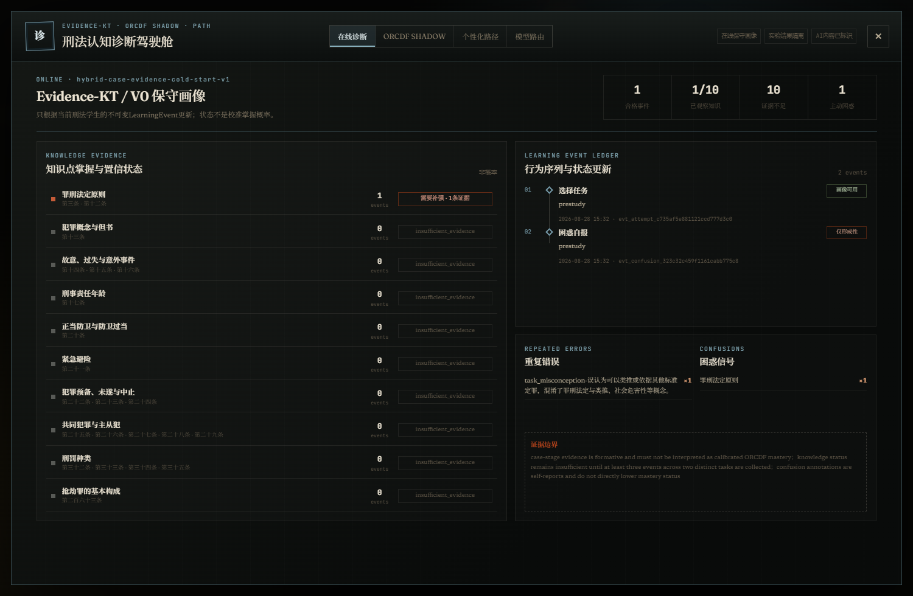
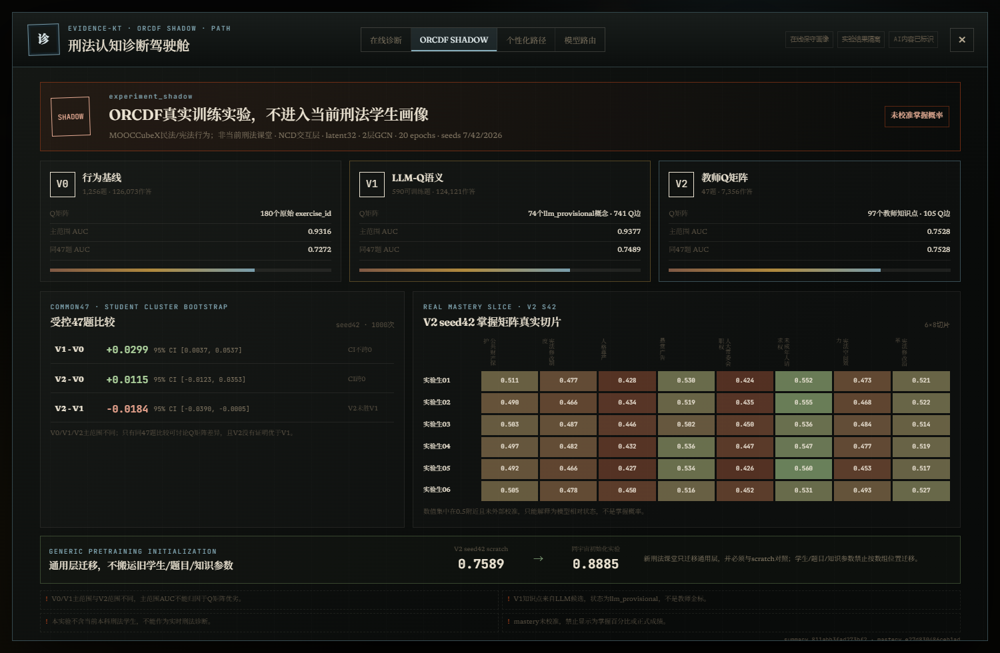
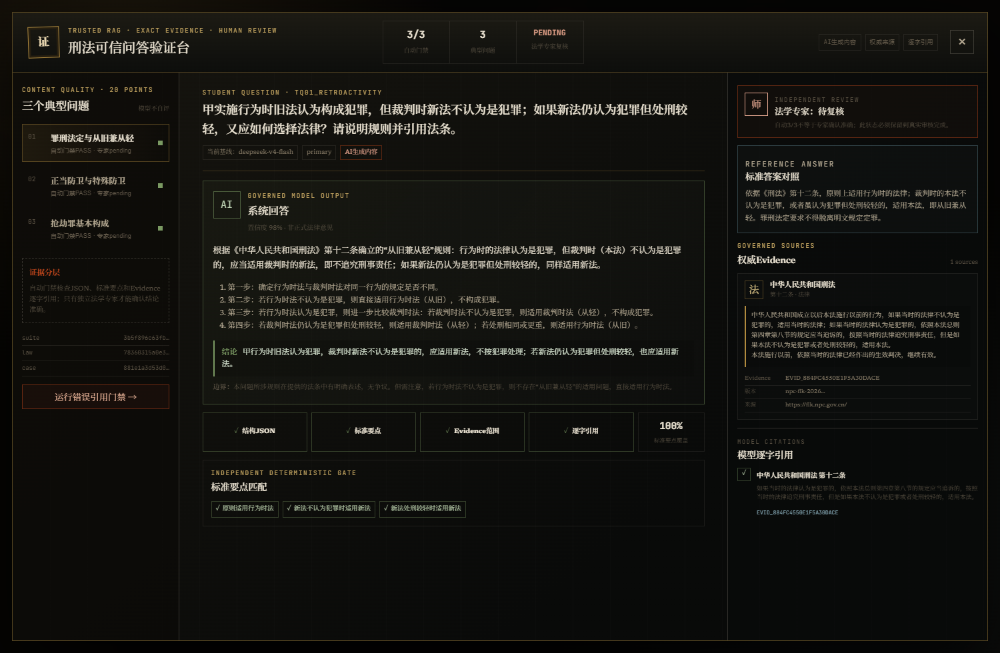
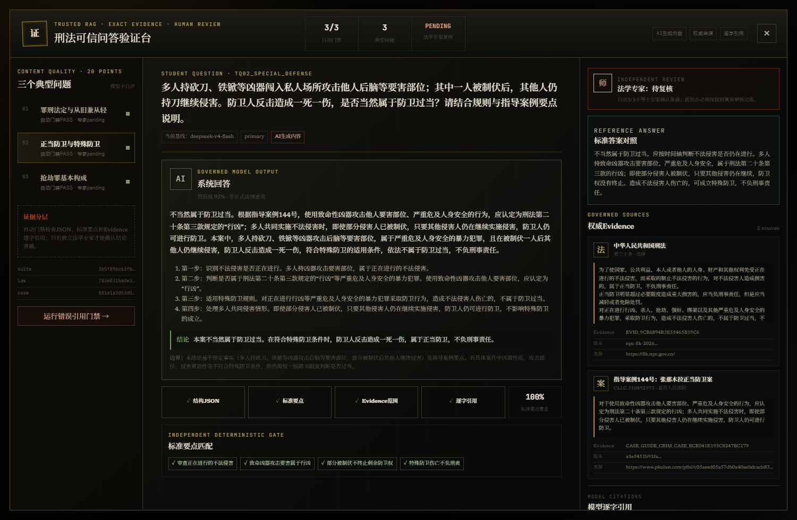
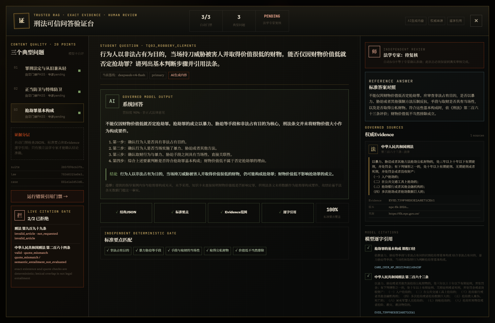

0→3
课堂数据稀缺
无连续作答时从 insufficient_evidence 开始；至少3个合格事件且覆盖2道任务，才形成 provisional。
从“缺少课堂历史数据”出发，先建立可核验的证据闭环。
无连续作答时从 insufficient_evidence 开始；至少3个合格事件且覆盖2道任务，才形成 provisional。
法条名称、条号、原文、来源、版本与SHA进入同一Evidence链；错引必须拒绝或弃权。
调查、质证、涵摄、辩护与立场互换，需要多Agent状态机和Rubric持续诱发证据。
模型只能使用当前问题的受治理Evidence；来源、法条、版本和逐字quote必须全部通过。
错条号、伪造引文、越界Evidence或结构失败，不能以“模型自信”绕过确定性门禁。

刑法核心知识点
真实smoke学生事件
状态不是掌握概率

原始行为ID
LLM暂定Q矩阵
教师Q；mastery未校准
模型根据Rubric给出优点、修改建议和引用检查；无论置信度多高，状态仍是 needs_teacher_review。
教师可批准、退回或拒绝；退回稿带入原文修订，批准后才生成唯一合格事件。
学生扮演辩护律师；检察官、法官和当事人按状态机协作。PR阶段引用刑法第二十条与指导案例，Agent真实作出不起诉分支。
LC→INV→PR→不起诉→已结案；冻结库本次测试脚本29次固定回答，非真人用户数据。
律师、检察官、法官只获得阶段与角色允许的工具。
3事件全部eligible并送达adaptive；下一任务继续补强同知识点。
subjective_scoring
learning_support
teaching_judge
response_assist
Prompt / Few-shot / 可信RAG / fallback按任务选择；Key与私有URL不进入前端。
RAG+微调只有通过独立金标准、引用忠实度和专家复核后才可接入。



结构、标准要点与逐字Evidence
现场调用citation audit，不用前端假结果
自动门禁不等于专家准确率
RAG、Agent、Evidence-KT、ORCDF shadow、路径、教师门禁与Model Adapter均有真实软件证据。
至少2名目标用户试用记录；独立法学专家对3个典型问题的审核意见。
76.84秒1080p真实交互+AI配音/字幕；待团队审片、PR对抗快照和最终批准。